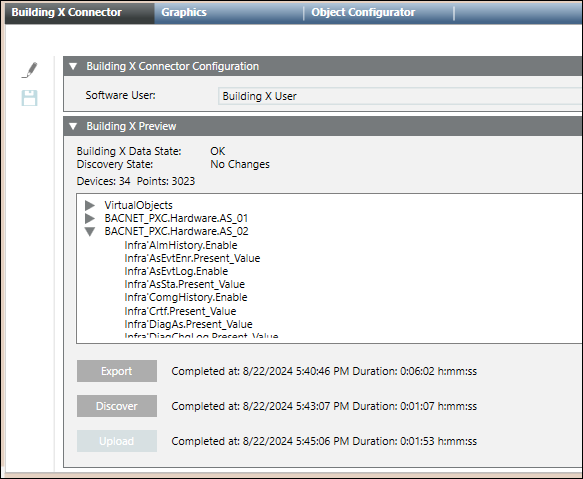
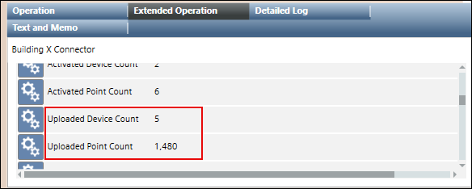

Configuring Building X Connector
Select the Building X Software User
- System Manager is in Engineering mode.
- Uncheck Manual Navigation.
- Select Project > Management System > Servers > Main Server > Building X Connector.
- Select the Building X Connector tab.
- Click Edit
 .
. - For Software User, click the drop-down arrow, and then select the Building X User—for example, Building X User.
- Click Save
 .
. - After several seconds, the Operational State displays Ready.
Generate the Export
Data export creates a bundle of Desigo CC device and point data from the local management station for use during the discovery process.
The export process reflects the current device configuration. Many configuration changes can alter the devices or points exposed to Building X. Common examples include adding, removing or modifying devices and points, or changing privileges or scope. If you make any changes of this type, you must perform another export. Otherwise, the discovery process (see the next step) and the Building X platform will not pick up the changed device and point configuration.
- Generate the export by clicking the Export button at the bottom of the Building X Preview pane. Once you click the Export button, a readout of the export’s progress appears next to the button.
Discover Devices and Points
Discovery is the final step before upload to Building X. It allows the user to see a detailed list of all devices and points to be uploaded to Building X.
If you made configuration changes that affect the devices or points exposed to Building X, these will not be detected by discovery alone. First, you must perform another export (see the previous step). After re-export, any downstream changes will be picked up by discovery.
- The “Discover” button can be found directly below the “Export” button on the Building X Preview pane within the Building X Connector tab.
- Click Discover.
NOTE: This button is enabled when the export has completed and the Operational State is Ready. - An expandable list of devices and data points, along with a count of devices and data points, displays in the Building X Preview expander.

- Verify that the discovered devices and points are in line with your expectations. If there are too many (or too few) points and devices discovered, the most likely cause is a misconfigured scope. See the above section, Adding a Security Group, for more information on scopes. If you change the scope, you will need to perform another export (see the previous section, Generate the Export) and run the discovery process again.
Upload Discovered Points to Building X
- Once you are ready to upload the discovered points to Building X, click Upload, (below the Discover button) then OK.
NOTE: the upload button is disabled if there is no difference between the locally discovered points and the points already uploaded to Building X (“No Changes”). - The system uploads all devices and points in the preview area to Building X. See the contextual pane for a count of the number of devices and points uploaded.

- Using a Building X application (for example, Data Setup) verify that all devices and points were successfully uploaded.
NOTE: You will need access to a Building X application and its documentation.
- In the Building X application (for example, Operations Manager) you can now monitor the current values and start commanding.
NOTE: By default, all data points are uploaded to Building X in a deactivated state. Points must first be activated in Data Setup before they can be managed in a Building X application.